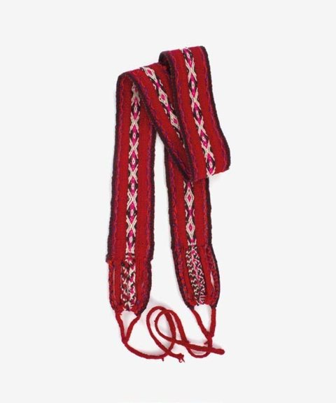

Generá tu propio símbolo combinando piezas inspiradas en las referencias del archivo.
COMUNIDAD / TU CREACIÓN
Creación contemporánea inspirada en patrones. No es una pieza histórica.
Al sumarlo, tu símbolo entra en los próximos del tablero y se rankea la semana que viene.
Arrastrá para mover · Flechas del teclado para ajustar · R para girar
Antes de publicar
Una vez publicado lo ve toda la comunidad y entra en el ranking de la semana próxima.

DEL ARCHIVO A TU COMPOSICIÓN